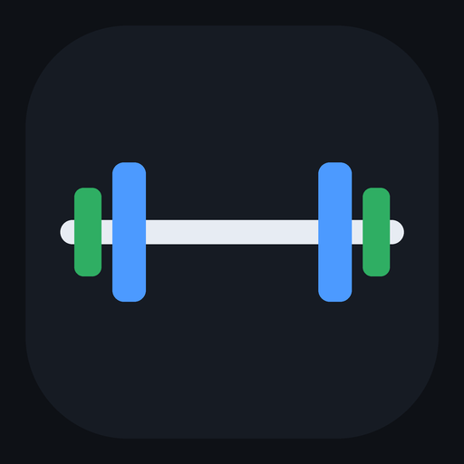

5-Day PPLUL
Push · Pull · Legs · Upper · Lower — 90 working sets a week, 35 of them legs. Plus an offline tracker that computes your progression for you.
Start here — just the steps Open the tracker- Program overviewSplit, volume, progression, deloads, autoregulation
- PushChest · Delts · Triceps
- PullBack · Rear Delts · Biceps
- LegsQuad-dominant · Squat anchor
- UpperSecond chest/back/delt/arm dose
- LowerHinge · Posterior · Unilateral
- Nutrition2,900 kcal · 165 g protein · the feedback loop
- Pre-workout energyFuel the 5:30pm session without losing sleep
On your phone: open the tracker, then Share → Add to Home Screen. After that it works with no signal at all.